| > Home |
| > Documentation |
| > Downloads |
| > Online Demo |
| > Contact |
How to use the Taxonomy Querying System of OO jDREW
How to Input a Taxonomy
There are two different methods to define a Taxonomy (RDFS/XML subClassOf). One way is to use RDFS/XML to define the taxonomy. The other way to define a taxonomy is to use the RuleML/POSL syntax of subsumes(superClass, subClass). This also comes with a RuleML/XML syntax.All of the examples shown will be based on the following taxonomy diagram. The artificial class Thing at the top of the directed labeled graph is used to show that every class has a superClass of type "Thing". As well as the artificial Nothing is used to show that every class is a subClass of "Nothing".
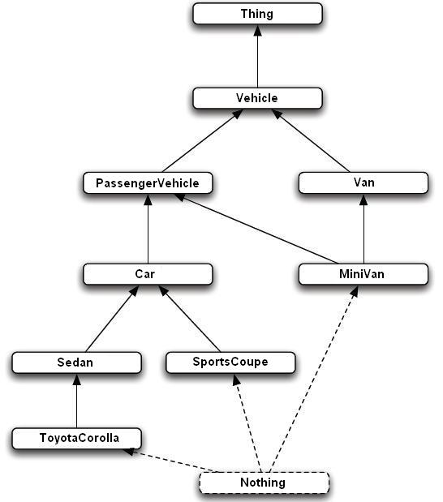
RuleML/POSL Syntax
How to write the RuleML/POSL syntax for types is explained in the next few lines.subsumes(superClass, subClass).
Where superClass is the superClass in the relation and subClass is the sub class in the relation. The predicate subsumes means that the superClass can subsume the subClass.
The RuleML/POSL syntax for the illustrated Taxonomy can be defined in the following RuleML/POSL facts:
% Taxonomy Facts:
subsumes(Vehicle,PassengerVehicle).
subsumes(Vehicle,Van).
subsumes(PassengerVehicle,Car).
subsumes(PassengerVehicle,MiniVan).
subsumes(Van,MiniVan).
subsumes(Car,Sedan).
subsumes(Car,SportsCoupe).
subsumes(Sedan,ToyotaCorolla).
RDFS/XML Syntax
The above taxonomy can be defined in RDFS/XML by the following schema:<rdf:RDF
xmlns:rdf="http://www.w3.org/1999/02/22-rdf-syntax-ns#" xmlns:rdfs="http://www.w3.org/2000/01/rdf-schema#" xml:base="http://example.org/schemas/vehicles"> <rdf:Description rdf:ID="Vehicle"> <rdf:type rdf:resource="http://www.w3.org/2000/01/rdf-schema#Class"/> </rdf:Description> <rdf:Description rdf:ID="PassengerVehicle"> <rdf:type rdf:resource="http://www.w3.org/2000/01/rdf-schema#Class"/> <rdfs:subClassOf rdf:resource="#Vehicle"/> </rdf:Description> <rdf:Description rdf:ID="Van"> <rdf:type rdf:resource="http://www.w3.org/2000/01/rdf-schema#Class"/> <rdfs:subClassOf rdf:resource="#Vehicle"/> </rdf:Description> <rdf:Description rdf:ID="Car"> <rdf:type rdf:resource="http://www.w3.org/2000/01/rdf-schema#Class"/> <rdfs:subClassOf rdf:resource="#PassengerVehicle"/> </rdf:Description> <rdf:Description rdf:ID="MiniVan"> <rdf:type rdf:resource="http://www.w3.org/2000/01/rdf-schema#Class"/> <rdfs:subClassOf rdf:resource="#Van"/> <rdfs:subClassOf rdf:resource="#PassengerVehicle"/> </rdf:Description> <rdf:Description rdf:ID="Sedan"> <rdf:type rdf:resource="http://www.w3.org/2000/01/rdf-schema#Class"/> <rdfs:subClassOf rdf:resource="#Car"/> </rdf:Description> <rdf:Description rdf:ID="SportsCoupe"> <rdf:type rdf:resource="http://www.w3.org/2000/01/rdf-schema#Class"/> <rdfs:subClassOf rdf:resource="#Car"/> </rdf:Description> <rdf:Description rdf:ID="ToyotaCorolla"> <rdf:type rdf:resource="http://www.w3.org/2000/01/rdf-schema#Class"/> <rdfs:subClassOf rdf:resource="#Sedan"/> </rdf:Description> </rdf:RDF>
How to Query the Taxonomy
- To test if two classes are in a direct super/sub class relationship then the following query is used:
In POSL Syntax:
subsumes(superClass,subClass).
In RuleML Snytax:
<Subsumes> <Rel>superClass</Rel> <Rel>subClass</Rel> </Subsumes>
- To test if two classes are in a indirect (transitive closure) super/sub class relationship then the following query is used:
In POSL Syntax:
subsumesPlus(superClass,subClass).
In RuleML Snytax:
<SubsumesPlus> <Rel>superClass</Rel> <Rel>subClass</Rel> </SubsumesPlus>
- To find all of the direct subClasses of a class the following query is used:
In POSL Syntax:
subsumes(superClass, ?subClass).
In RuleML Snytax:
<Subsumes> <Rel>superClass</Rel> <Var>subClass</Var> </Subsumes>
- To find all of subClasses of a class in the transitive closure the following query is used:
In POSL Syntax:
subsumesPlus(superClass, ?subClass).
In RuleML Snytax:
<SubsumesPlus> <Rel>superClass</Rel> <Var>subClass</Var> </SubsumesPlus>
- To find all of the direct superClasses of a class the following query is used:
In POSL Syntax:
subsumes(?superClass, subClass).
In RuleML Snytax:
<Subsumes> <Var>superClass</Var> <Rel>subClass</Rel> </Subsumes>
- To find all of superClasses of a class in the transitive closure the following query is used:
In POSL Syntax:
subsumesPlus(?superClass, subClass).
In RuleML Snytax:
<SubsumesPlus> <Var>superClass</Var> <Rel>subClass</Rel> </SubsumesPlus>
- To find all direct super/sub class relationships for every class in the taxonomy the following query is used:
In POSL Syntax:
subsumes(?superClass, ?subClass).
In RuleML Snytax:
<Subsumes> <Var>superClass</Var> <Var>subClass</Var> </Subsumes>
- To find all indirect (transitive closure) super/sub class relationships for every class in the taxonomy the following query is used:
In POSL Syntax:
subsumesPlus(?superClass, ?subClass).
In RuleML Snytax:
<SubsumesPlus> <Var>superClass</Var> <Var>subClass</Var> </SubsumesPlus>
- To find the least upper bound of a set of classes the following is used (Relational):
In POSL Syntax:
lub(?result,class1,class2,class3,...,classN).
In RuleML Snytax:
<LUB> <Var>result</Var> <Rel>class1</Rel> <Rel>class2</Rel> <Rel>class3</Rel> ................ <Rel>classN</Rel> </LUB>
- To find the greater lower bound of a set of classes the following is used (Relational):
In POSL Syntax:
glb(?result,class1,class2,class3,...,classN).
In RuleML Snytax:
<GLB> <Var>result</Var> <Rel>class1</Rel> <Rel>class2</Rel> <Rel>class3</Rel> ................ <Rel>classN</Rel> </GLB>
How to input the taxonomy into OO jDREW
To input the taxonomy you must first select the format you want to use, either POSL format or RDFS. You can then copy and paste your taxonomy into the text area. Once your taxonomy has been placed in the text area then you must press the "Load Type Information" button.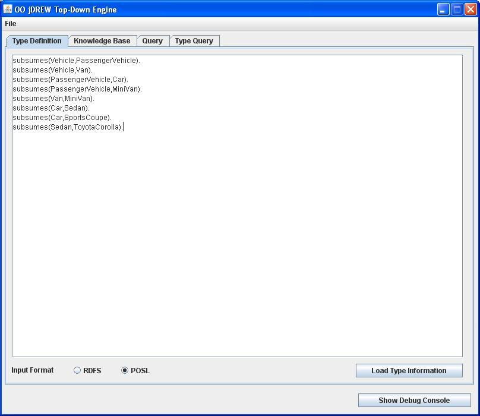
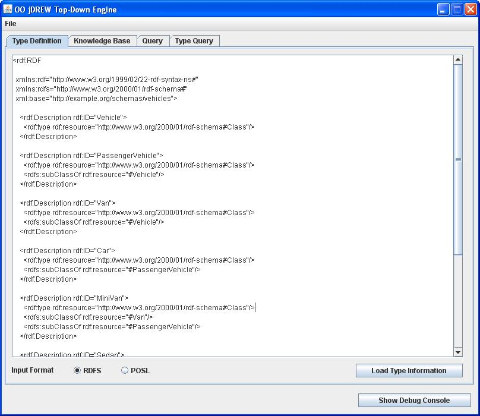
Examples of Querying the Taxonomy with POSL
Once the taxonomy information has been parsed, switch to the "Type Query" pane to query the taxonomy.-
subsumes(Vehicle, Car).
Since a Vehicle is not a direct superClass of Car OO jDREW will return false.
- subsumesPlus(Vehicle, Car).
Since a Vehicle is a superClass of Car in the transitive closure OO jDREW will return true.
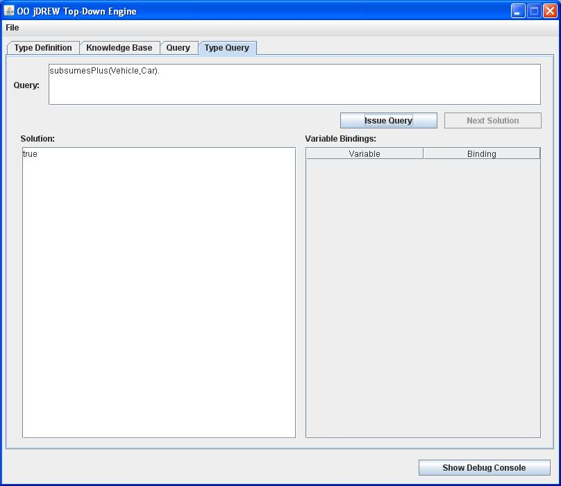
- subsumes(Car, ?X).
In this query, OO jDREW will bind ?X to all of the direct subClasses of the class Car. The first solution OO jDREW finds is Sedan, while the next solution would be bound to SportsCoupe.
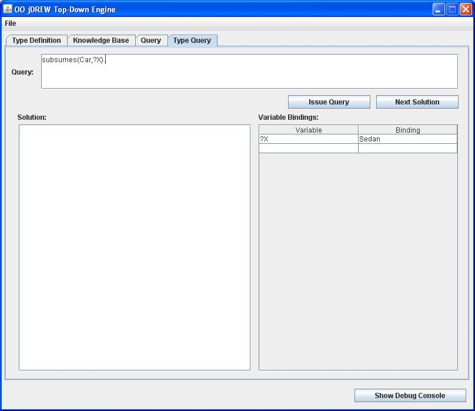
- subsumesPlus(Car, ?X).
In this query, OO jDREW will bind ?X to all of the classes below Car in the transitive closure. So ?X would be bound to the following: Sedan, SportsCoupe, and ToyotaCorolla.
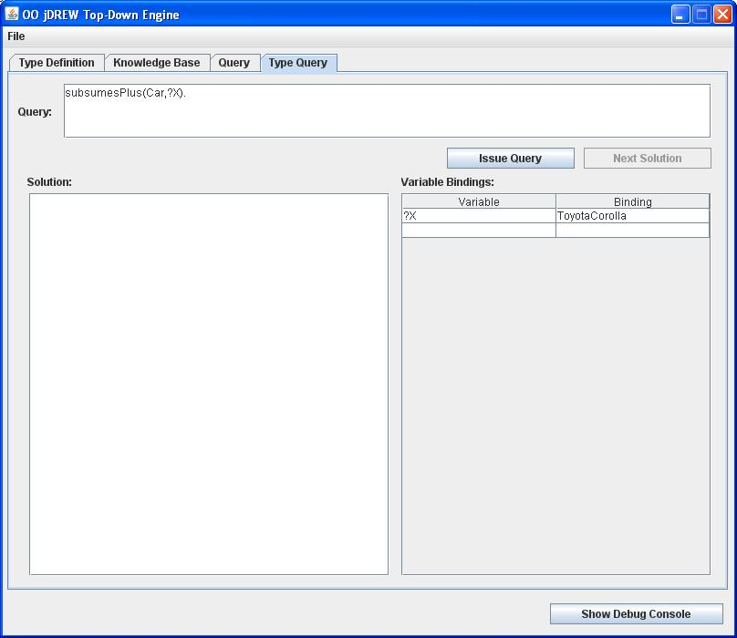
- subsumes(?X, MiniVan).
In this query, OO jDREW will bind ?X to all of the direct superClasses of MiniVan. The bindings of ?X are as follows: Van and PassengerVehicle. MiniVan is in the scope of multiple inheritance, since it is both a Van and a PassengerVehicle.
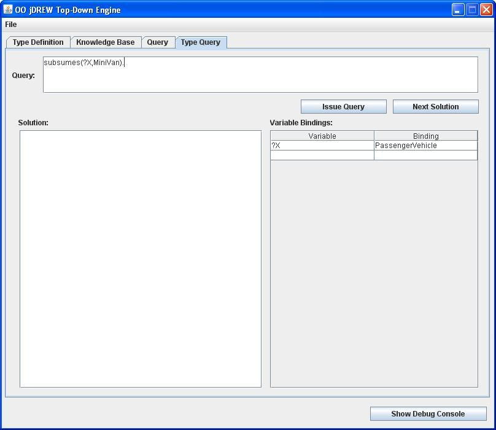
- subsumesPlus(?X, MiniVan).
In this query, OO JDREW will bind ?X to all of the superClasses of MiniVan in the transitive closure. ?X will bind to the following classes: Vehicle, Van, and PassengerVehicle.
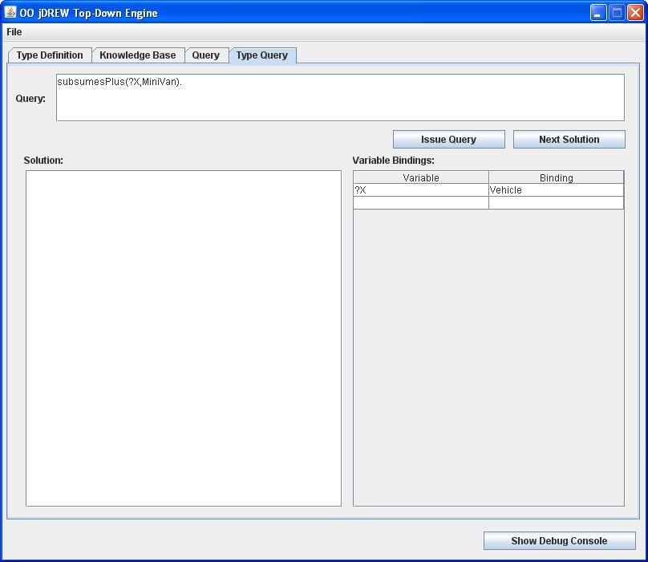
- subsumes(?X, ?Y).
This query will return all of the direct subClass and superClass relations stored in the taxonomy.
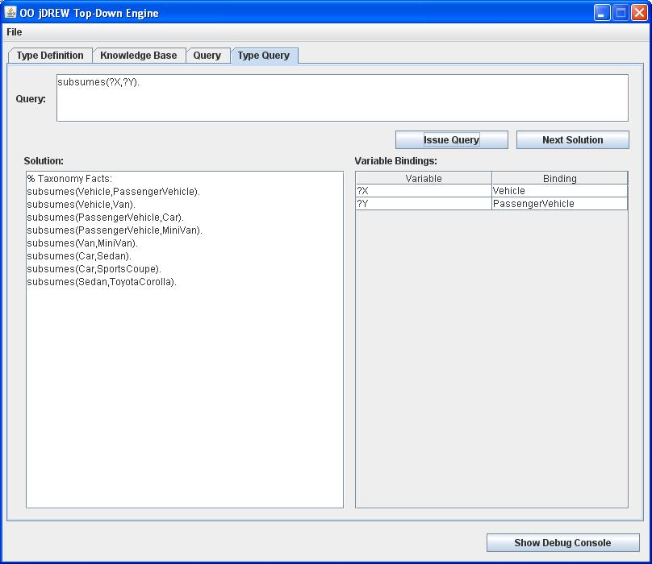
- subsumesPlus(?X, ?Y).
This query will return all of the subClass and superClass relations inferred by the transitive closure.
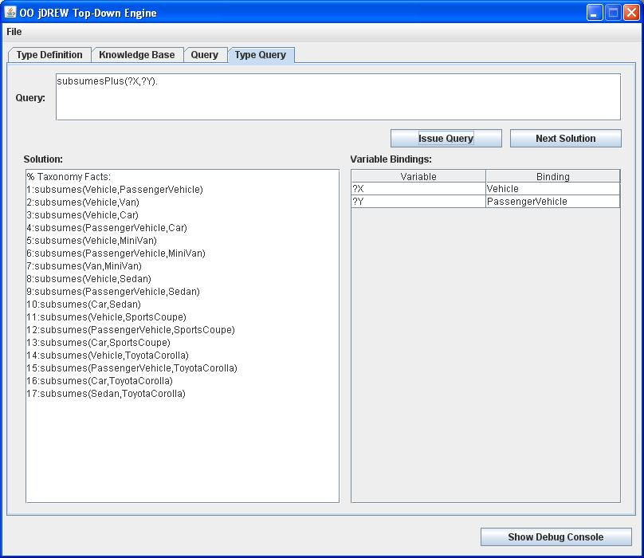
- lub(?Result, SportsCoupe, ToyotaCorolla, MiniVan).
The least upper bound of a SportsCoupe, ToyotaCorolla, and MiniVan is a passenger vehicle. I.e PassengerVehicle is the smallest class above SportsCoupe, ToyotaCorrla, and MiniVan. The result is bound to a variable.

- glb(?Result, PassengerVehicle, Van).
The greast lower bound of PassengerVehicle and Van is a MiniVan. I.e, MiniVan directly inherits from both a Van and a PassengerVehicle. The Result is bound to a variable.
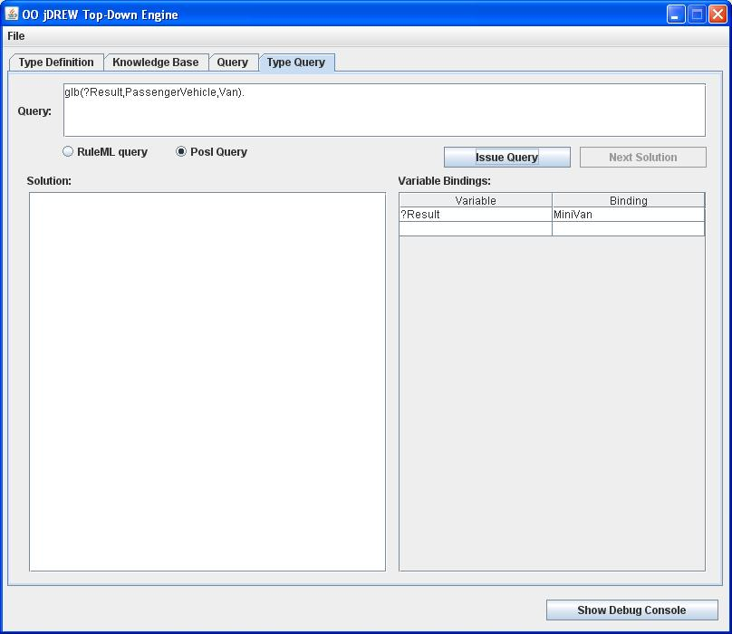
Examples of Querying the Taxonomy with RuleML
Once the taxonomy information has been parsed, switch to the "Type Query" pane to query the taxonomy.-
<Subsumes> <Rel>Vehicle</Rel> <Rel>Car</Rel> </Subsumes>
-
<SubsumesPlus> <Rel>Vehicle</Rel> <Rel>Car</Rel> </SubsumesPlus>
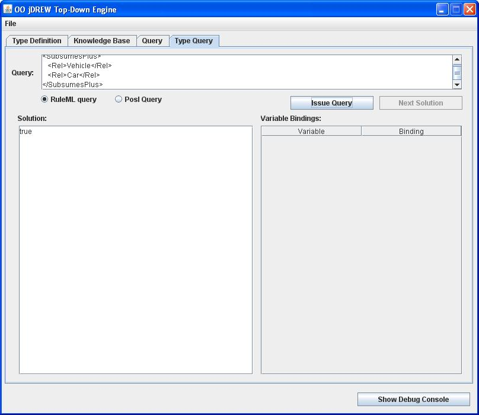
-
<Subsumes> <Rel>Car</Rel> <Var>X</Var> </Subsumes>
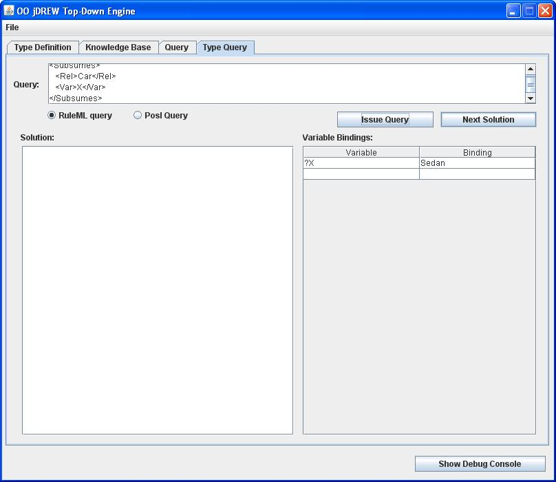
-
<SubsumesPlus> <Rel>Car</Rel> <Var>X</Var> </SubsumesPlus>
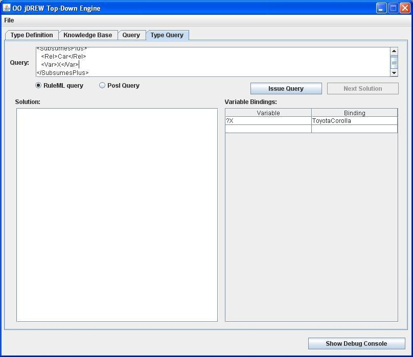
-
<Subsumes> <Var>X</Var> <Rel>MiniVan</Rel> </Subsumes>
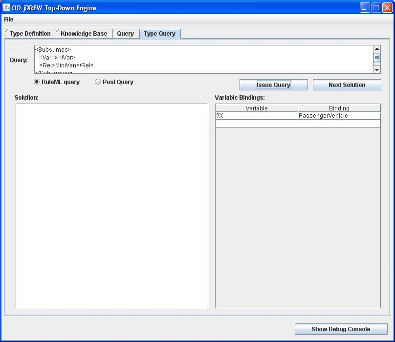
-
<SubsumesPlus> <Var>X</Var> <Rel>MiniVan</Rel> </SubsumesPlus>
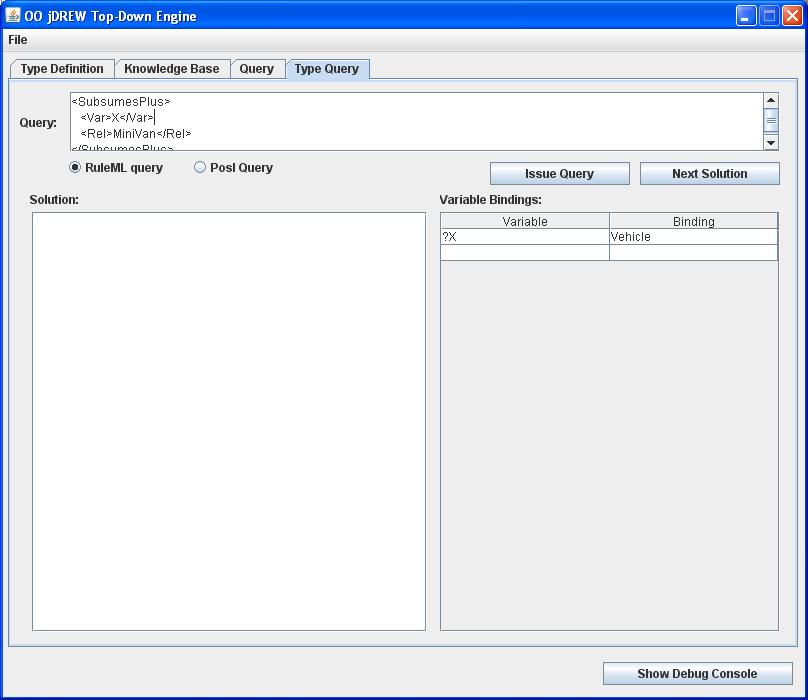
-
<Subsumes> <Var>X</Var> <Var>Y</Var> </Subsumes>
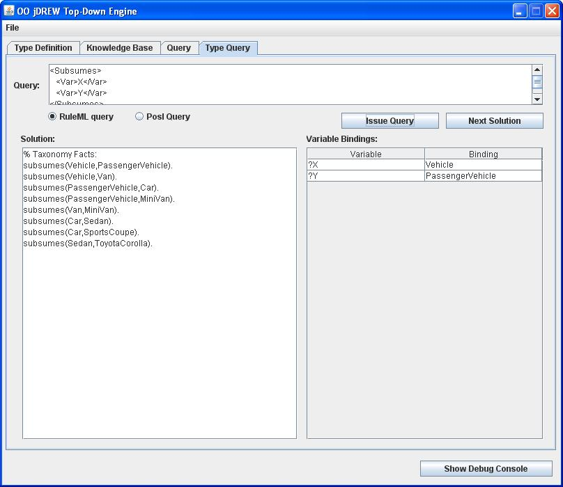
-
<SubsumesPlus> <Var>X</Var> <Var>Y</Var> </SubsumesPlus>
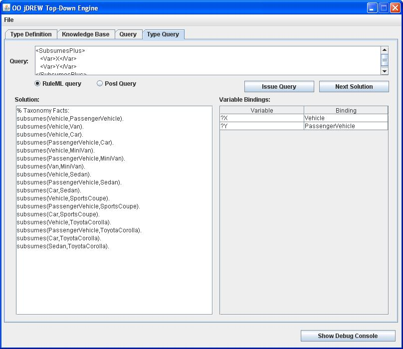
-
<LUB> <Var>Result</Var> <Rel>SportsCoupe</Rel> <Rel>ToyotaCorolla</Rel> <Rel>MiniVan</Rel> </LUB>
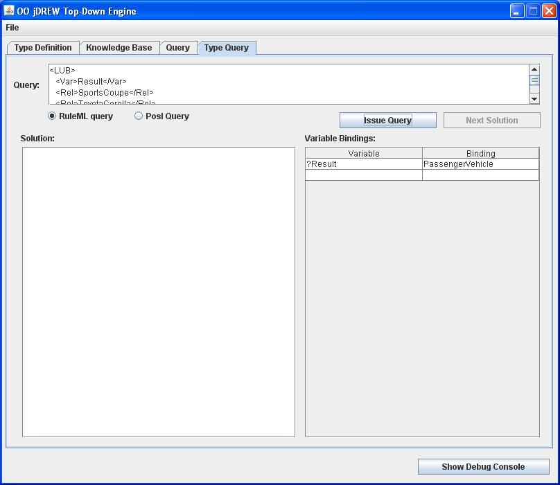
-
<GLB> <Var>Result</Var> <Rel>PassengerVehicle</Rel> <Rel>Van</Rel> </GLB>
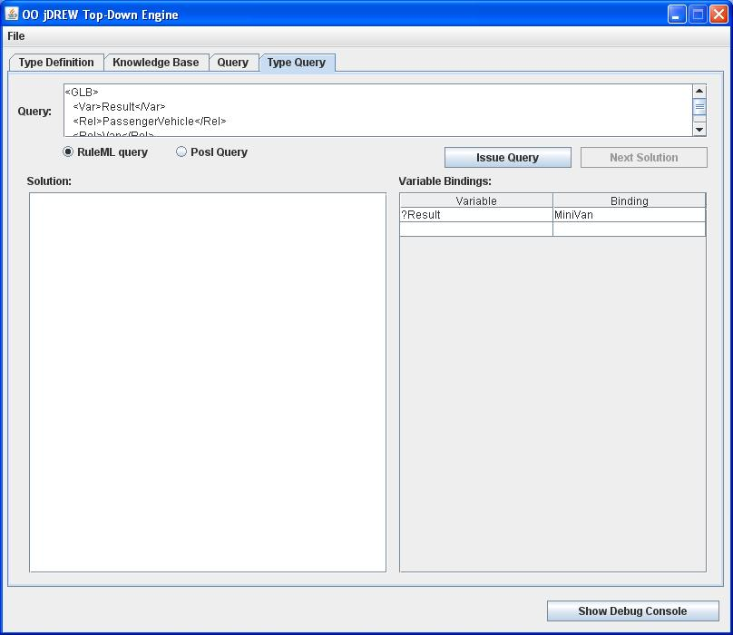
Last Updated:
July 5, 2008
By:
Ben Craig